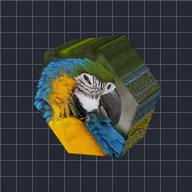

六角柱

レイヤーを六角柱の表と裏に貼り付けます。
設定
| 設定項目 | 種類 | 範囲 | デフォルト |
|---|---|---|---|
| X回転 | 角度 | -3600°〜3600° | -20° |
| Y回転 | 角度 | -3600°〜3600° | -35° |
| Z回転 | 角度 | -3600°〜3600° | 0° |
| 半径 | 数値 | 0.02〜5 | 0.75 |
| 奥行き | 数値 | 0.01〜5 | 0.35 |
| スムージング | 数値 | 0〜1 | 0.15 |
| 位置 | ポイント（X, Y） | -5000 px〜5000 px | 0 px, 0 px |
| スケール | 数値 | 0.05〜10 | 1 |
| パースペクティブ | 数値 | 0〜1 | 0.5 |
| シェーディング | 数値 | 0〜1 | 0.6 |
| 光源角度 | 角度 | -3600°〜3600° | 135° |
| 光沢 | 数値 | 0〜1 | 0.3 |